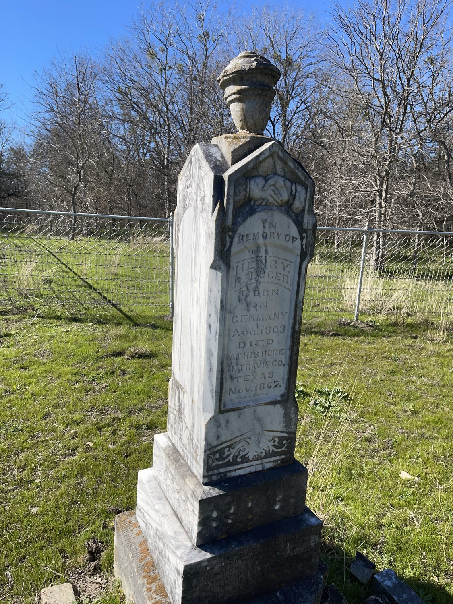
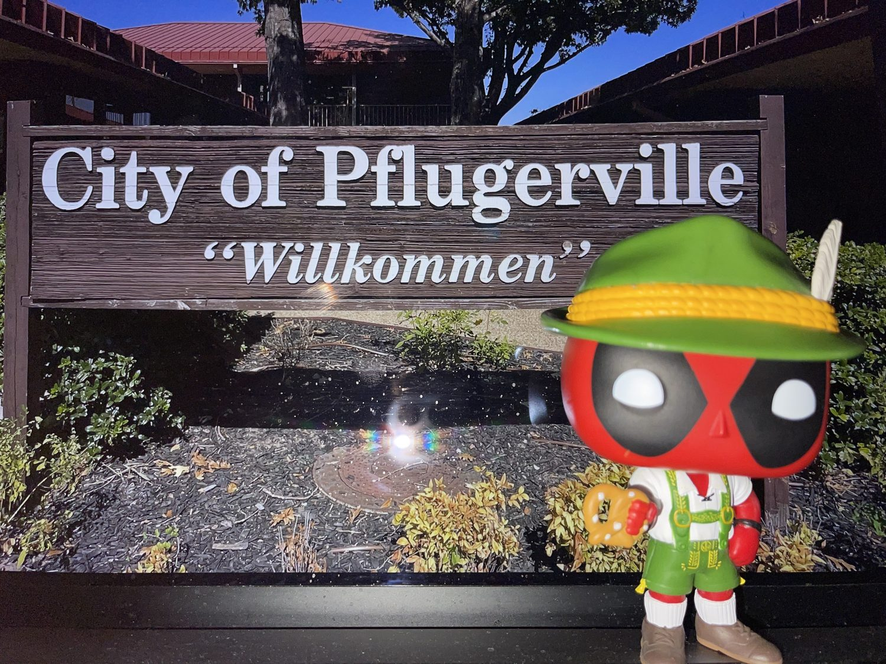
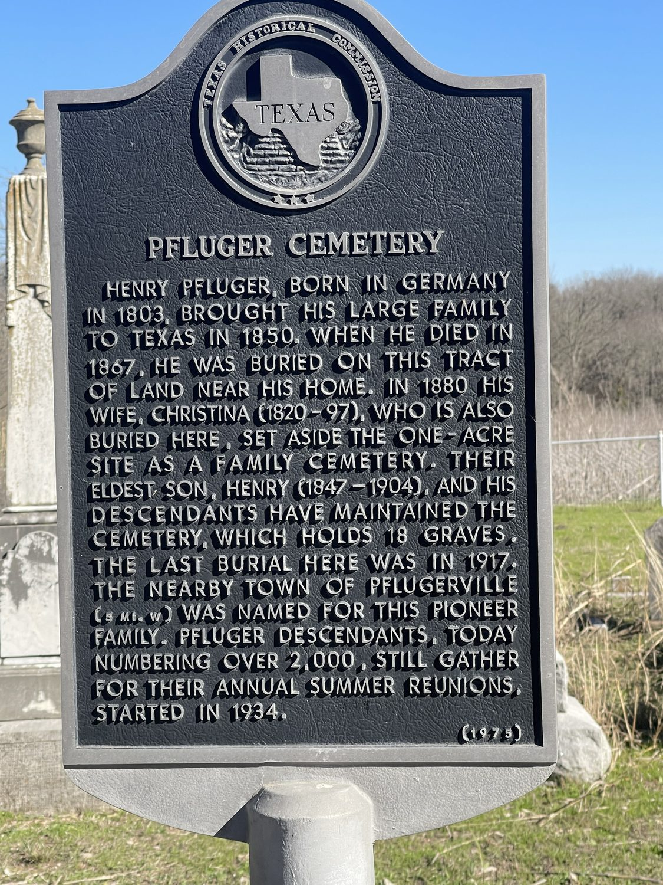

The story of Pflugerville
So many of us moved here recently and never heard the tale of how this little German farm town on the prairie became one of the friendliest places in Texas. Here’s the short, sweet version. Pull up a porch chair.
What’s with all the “Pf”?
If “Pflugerville” looks like a typo, you can blame (and thank) a German farmer named Henry Pfluger Sr. “Pflug” is simply the German word for plow, and the family name carried that hard-working spirit all the way from Hesse to the Texas blackland prairie.
Locals have long had fun with it. You’ll spot the proud “Pf” everywhere, from Deutschen Pfest, the city’s German heritage festival, to friendly nicknames for the schools, parks, and pfun community events. It’s a little wink that says we know exactly who we are and where we came from.
A family, a plow, and 960 acres of prairie
Henry Pfluger was a prosperous farmer in Altenhasungen, in the German region of Hesse. Then the upheaval of the Revolutions of 1848 cost him nearly everything. Like so many neighbors who’ve come to Pflugerville since, he packed up his family and set out for a fresh start, arriving in Texas around 1849 to 1852.
He bought a first parcel of land east of Austin from his brother-in-law, and in 1853 traded up for a 960 acre tract near a spot called Brushy Knob, along the banks of Gilleland Creek. The Pflugers were the first German family to settle and work the land here. Home was a five room log cabin, and the fields grew corn, wheat, rye, beans, sweet potatoes, and sugar cane. Life on the early prairie was hard and the country was wide open, but the family dug in and stayed.
After the Civil War, a real community began to take root. Neighbors built a school in 1872 on Henry Lisso’s farm and founded Immanuel Lutheran Church a couple of years later. Those are the kind of institutions that turn a cluster of farms into a town.

Pflugerville through the years
- 1853
Henry Pfluger Sr. moves his family onto a 960 acre farm near Gilleland Creek, the seed of the town. - 1872 to 1874
The first school opens, soon followed by Immanuel Lutheran Church. A community is born. - 1890 to 1893
Louis Bohls opens the first general store and the post office. Folks finally bank and ship from home instead of riding to Round Rock. - 1891
Neighbors form a mutual aid association to insure against disaster, plus a beloved German shooting and bowling club, the Schützen und Kegel Verein. - 1904
The Missouri, Kansas, and Texas Railroad (the “Katy”) arrives. George Pfluger and his son Albert lay out the official town site and donate land for a depot and school. - 1907 to 1942
The town reads all about itself in The Pflugerville Press. - 1958 to 1962
Pflugerville High School football wins 55 games in a row and earns the little town national fame. - 1965
Pflugerville is officially incorporated as a city. - 1980
Still a small town of about 750 people. - Today
Home to roughly 65,000 neighbors and counting, a growing community that still feels like a hometown.
The people who call it home
In four decades Pflugerville grew nearly a hundredfold, from a farm town of 750 people to a city of about 65,000. What hasn’t changed is the welcome.
A true melting pot
What began as one German family is now one of the most diverse communities in the Austin area, home to neighbors from every background raising families side by side.
Still a festival town
From Deutschen Pfest to summer nights at Gilleland Park, Pflugerville keeps its German roots alive with food, music, and a whole lot of pfun.
Room to roam
Miles of hike and bike trails, Lake Pflugerville, and growing parks make it easy to get outside. The prairie Henry Pfluger farmed is now everybody’s backyard.
Landmarks around Pflugerville


Pflugerville, Texas: frequently asked questions
Where is Pflugerville, Texas?
Pflugerville is a city in Travis County, Texas, just northeast of Austin. Downtown Austin is about a 20 minute drive away, and the city sits along State Highway 130 on the Texas blackland prairie.
How do you pronounce Pflugerville?
It’s pronounced FLOO-gur-vil. The opening “Pf” is said like a simple “F,” so the whole name sounds like “Floogerville.”
Why does Pflugerville start with “Pf”?
The town is named for German farmer Henry Pfluger Sr. “Pflug” is the German word for plow, and the Pfluger family carried the name from Hesse, Germany, to Texas in the 1800s.
Who founded Pflugerville?
Henry Pfluger Sr. settled the area in 1853 on a 960 acre farm near Gilleland Creek. His was the first German family to work the land here, and the community grew up around them.
What county is Pflugerville in?
Pflugerville is in Travis County, Texas, part of the greater Austin area.
How big is Pflugerville?
Pflugerville is home to roughly 65,000 residents today. As recently as 1980 it was a small town of about 750 people, so it has grown quickly while keeping its hometown feel.
When was Pflugerville incorporated?
Pflugerville was officially incorporated as a city in 1965. Its roots as a farming community reach back to the 1850s.
What is Pflugerville known for?
Pflugerville is known for its German heritage and the famous “Pf,” the Deutschen Pfest festival, Lake Pflugerville, miles of hike and bike trails, Typhoon Texas waterpark, and a friendly, diverse, family community just outside Austin.
What is Deutschen Pfest?
Deutschen Pfest is Pflugerville’s German heritage festival. It celebrates the town’s founding families with food, music, and community fun, and it’s one of the signature events of the year.
Want to dig deeper?
This history is summarized from public sources, including the Texas State Historical Association Handbook of Texas, the 1976 Texas Historical Commission marker, the Pflugerville Wikipedia entry, and the Pfluger family history. The Pflugerville Heritage House Museum is the best place to see it up close.